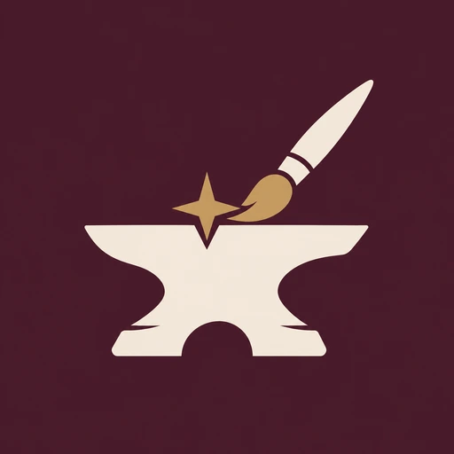
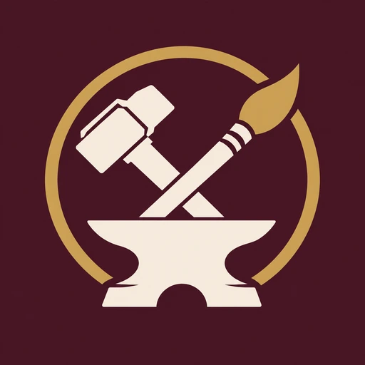
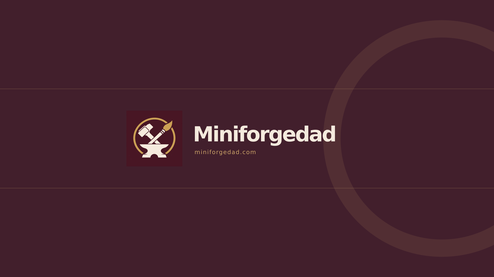
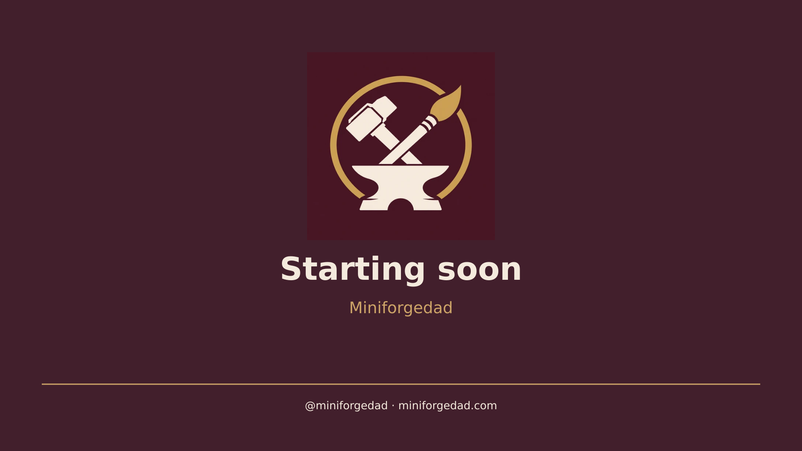
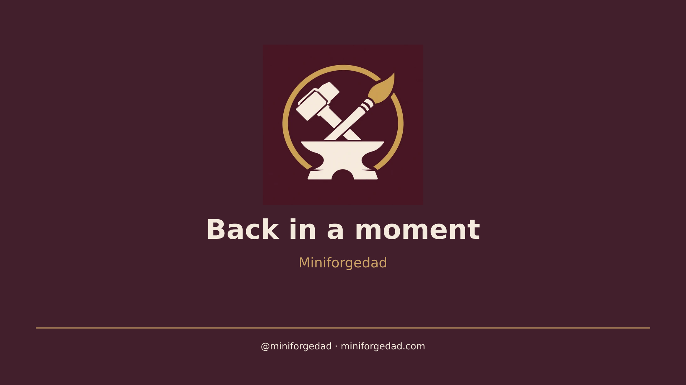
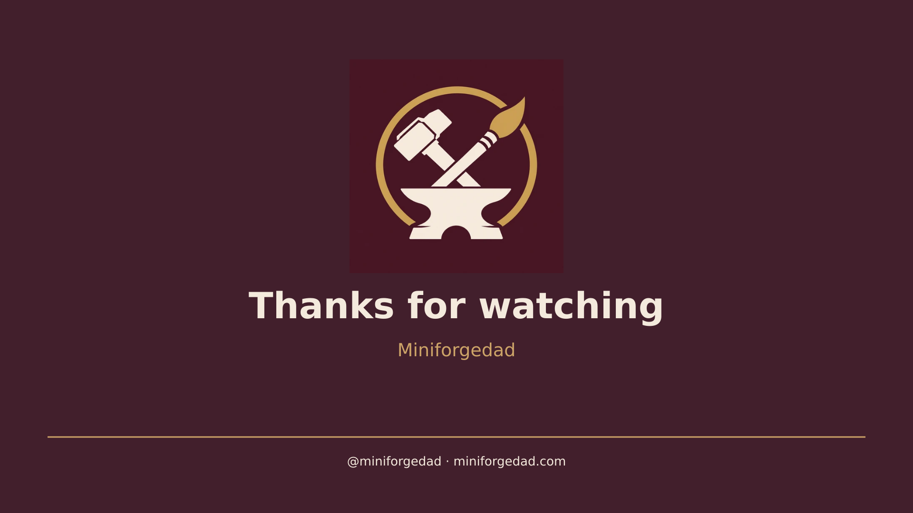

Primary profile mark

512 × 512 PNG for Instagram and YouTube.
Download PNG ↓The burgundy, ivory, and brass Miniforgedad kit: profile marks, YouTube artwork, and matching OBS screens.
Download the complete kit ↓
512 × 512 PNG for Instagram and YouTube.
Download PNG ↓
The matching alternate profile image.
Download PNG ↓Burgundy #421F2C
Ivory #F4EADD
Brass #CDA468
Use the complete profile mark with room around it. Keep text and detail clear at small sizes.
Setup guide ↓
2560 × 1440. The name and badge sit in the central safe area. Check the channel’s mobile and desktop crop previews when uploading.
Download channel banner ↓Choose a photo and title, then download the 1280 × 720 PNG. The photo stays in your browser.
Add a Browser Source at 1920 × 1080 using one of the screen links below. For offline use, download the kit, extract it, and select the matching HTML file as a local Browser Source.

Download PNG ↓
Download PNG ↓
Download PNG ↓Open transparent lower third ↗ — Browser Source, 1920 × 1080.
Open existing live ticker ↗ — Browser Source, 1920 × 60. It still uses the existing ticker editor.